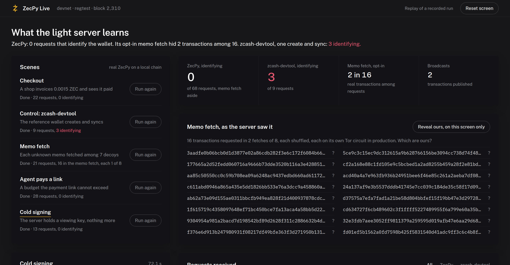

Docs Getting started
ZecPy Live demo
A walkthrough page that runs ZecPy through five scenes on a real chain and shows every request its light server receives.
ZecPy Live is a local web page that runs real ZecPy through five scripted scenes on a regtest chain. Beside them it shows every request the light server receives, as it arrives, recorded by two leak-audit proxies. It is the page the demo video is recorded from.
Source: github.com/xerodahdev/zecpy-demo

The five scenes
| Scene | What runs | What the server learns |
|---|---|---|
| Checkout | A shop wallet issues an invoice, a customer pays it, the payment confirms | Nothing identifying: compact blocks, aligned tree states, one broadcast |
| Control: zcash-devtool | The reference wallet on the same crates creates and syncs, through its own proxy | Its exact birthday and its transparent addresses: 3 identifying requests in the recorded run |
| Memo fetch | Nine payments land in one block; fetch_memos() reads the shop's memos |
Each real transaction requested among 7 decoys |
| Agent pays a link | An agent reads a ZIP-321 link; pay(max_zat=100_000) is refused and max_zat=200_000 pays |
One broadcast; the invoice confirms on the shop's side |
| Cold signing | A watch-only server builds and proves a PCZT; an offline signer inspects and signs it | One broadcast; the server never held a spending key |
All of it is real ZecPy, with real proofs and real blocks. Nothing on the page is mocked: the replay file is a recorded run of the same scenes.
Watch the recorded run
You do not need a chain to see it. Clone the demo next to the SDK and serve the replay:
git clone https://github.com/xerodahdev/zecpy-demo && cd zecpy-demo
source ../zecpy/.venv/bin/activate # an environment with zecpy and fastapi
uvicorn demo.server:app --port 8077Open http://127.0.0.1:8077/?replay. Add =instant to show it all at once, and
&reveal to mark which memo-fetch transactions were the wallet's own. Those marks come
from the wallet's records; the server received the same requests with no marks.
Run it live
With the local devnet up, the page runs every scene for real:
cd ../zecpy && devnet/up.sh "$(cat ~/.zecpy-dev/wallets/miner.addr)" && cd -
uvicorn demo.server:app --port 8077Open http://127.0.0.1:8077 and press Run on a scene. "Reset screen" clears the page
between takes. pytest -q in the demo repo runs every scene against devnet and checks its
privacy claims.
Reading it fairly
- The audit sees request content, not the network path. The proxies sit on loopback, so these runs use no Tor. In production ZecPy reaches remote servers over Tor.
- The memo fetch is counted, not hidden. Every
GetTransactionis labelled identifying, and the page shows the default path and the opt-in memo fetch as separate figures. - Devnet is a local chain. No testnet or mainnet funds move.